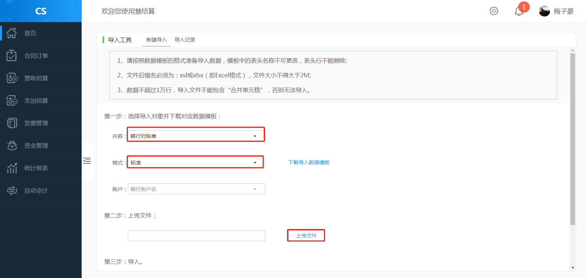

资金流水账
银行对账单
银行对账单导入
银行对账单从银行下载后，通过导入功能进入本系统形成银行对账单流水记录，用于发布收款、认领核销以及与企业日记账对账。
1、 选择银行对账单-导入
2 、在第一步中内容下拉框中，选择银行对账单；在格式中，有银行格式选对应银行格式，没有银行格式选标准（标准模板可下载）；在账户中选对应的银行账户名，选择需上传的文件；点击开始导入，提示导入成功。

银行对账单导入情况
系统记录银行对账单导入情况，便于查找导入失败原因。
- 如果导入失败，在记录中有导入失败数显示，本次导入记录都没有进入银行对账单中。
- 刚导入的记录，还没进行任何操作，可以通过删除操作删除记录。已操作过导入记录不能删除。
收款发布
银行对账单导入后，财务人员将收款记录发布，以便销售员进行收款认领。从而将财务与业务对接。
1、在银行对账单页面，选中未调节记录，点击右下角发布认领按钮，进入发布认领页面。
2、在待认领收款发布确认页面，进行收款发布确认。确认后，提示待认领收款发布成功。
3、收款发布后，财务人员发现收款发布有误，可以取消发布。
4、在银行对账单页面，选中待认领记录，点击右下角取消发布按钮，提示是否要取消发布，点击确认，完成取消发布。取消发布后，收款记录状态改为未调节。